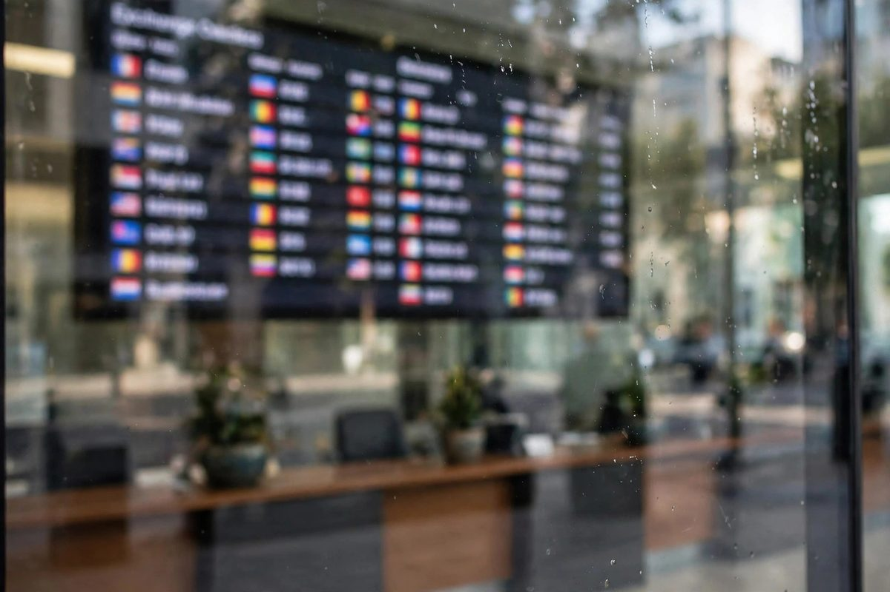

How Exchange Rates Work: A Plain-English Guide

What an exchange rate is
An exchange rate is the price of one currency in terms of another. When the rate is 1 US dollar to 0.92 euros, a dollar buys 0.92 euros, and a euro costs about 1.09 dollars. Rates are quoted in pairs, such as EUR/USD or USD/JPY, and the first currency is the base while the second is the quote. A rising rate for the base currency means it has strengthened, while a falling rate means it has weakened against the other currency.
Most major currencies float, which means their value is set by supply and demand in the foreign exchange market, the largest financial market in the world, with trillions of dollars traded every day. Banks, companies, investors, and central banks all buy and sell currencies, and their combined activity moves prices constantly. A few currencies are pegged, meaning a government fixes their value to another currency, such as the dollar, and defends that level with reserves.
What moves exchange rates
Interest rates are the most powerful driver. When a central bank raises rates, holding that currency becomes more attractive because savings and bonds pay more, so demand rises and the currency usually strengthens. Inflation matters too: a country with high inflation sees its currency weaken over time, because each unit buys less at home and abroad. Economic growth, political stability, and trade balances all feed into the same calculation, as traders judge which economies look healthy.
Short-term moves often come from news and expectations rather than from the economy itself. A surprising inflation report, an election result, or a central bank speech can move a currency by one or two percent in a day, because traders reprice what they expect to happen next. This is why rates can swing sharply even when nothing has changed in the real economy: the market is trading the future, not the present.
Buying, selling and the spread
Every exchange rate you see as a consumer has a spread, the gap between the buy price and the sell price. The mid-market rate is the midpoint, the rate banks use with each other, and the rate quoted on this site. Retail providers add a margin to that rate, so the rate you actually get is always worse than the mid-market rate. A spread of one percent is good, three percent is common at banks, and airport bureaus can charge ten percent or more.
Understanding the spread is the key to saving money on currency. Comparing providers on the total amount received, not on the advertised rate or fee alone, reveals the true cost. A provider with no fee but a poor rate is often more expensive than one with a fee and a fair rate. Our converter shows the mid-market rate, so use it as a benchmark and compare any offer against it before exchanging money.
Putting It Into Practice
Try this yourself: pick a currency pair you care about, note today's mid-market rate from our converter, and check it again in a week. Write down one news event from that week, such as a central bank announcement or an inflation report, and see whether the rate moved in the direction the news suggested. Repeating this for a month builds an instinct for how rates react to news, and it makes the abstract drivers in this guide concrete. You will also learn how small daily moves are compared with the spread most providers charge, which is the cost that matters most.
Frequently Asked Questions
What is the mid-market exchange rate?
It is the midpoint between the buy and sell prices on the wholesale market, the rate banks use with each other. Consumers usually get a worse rate because of the spread.
Why do exchange rates change every day?
Because currencies trade continuously and prices react to interest rates, inflation, economic news and expectations about the future.
Who sets exchange rates?
For floating currencies, the market sets them through supply and demand. Central banks influence rates through interest rates and, rarely, direct intervention.